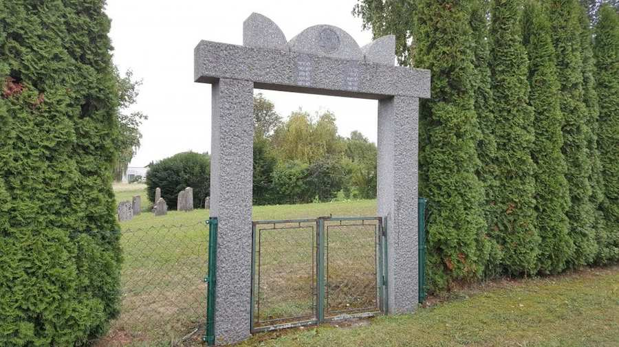

Городской Шлайнинг | Новый
7461 Stadtschlaining, Baumschulgasse no.
Это кладбище было создано примерно в 1902 году и является последним сохранившимся еврейским кладбищем в Штадтшлайнинге (первоначально их было три).
Кладбище содержится в образцовом порядке муниципалитетом Штадтшлайнинг.
Сохранилось лишь несколько надгробий.
Кладбище открыто.